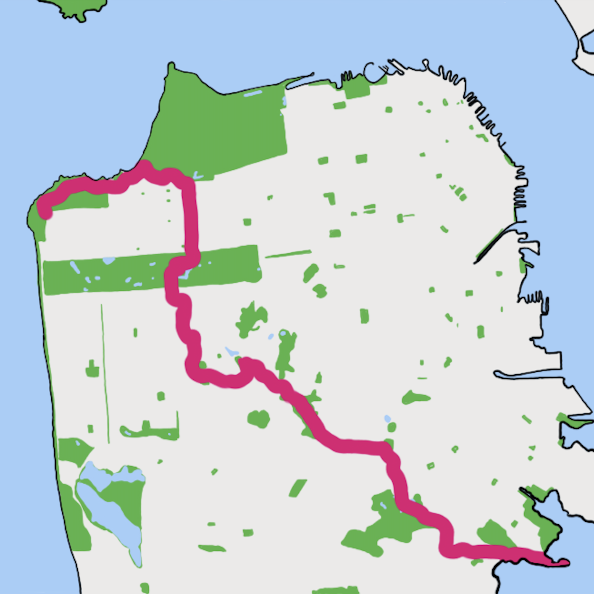

Wandering


Cross-town Walks
Travels from one corner of the city to the other
"Tap Tap Dog" is the name of my maybe future company. We may or may not someday be founded on the principal that communication is the foundation of all relationships. But until then, this space will host my personal website.
Travels from one corner of the city to the other
All my favorite recipes, in one place